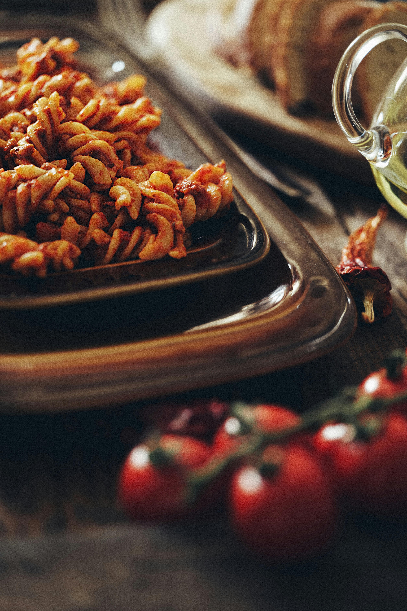

All Recipes
Baked Feta Pasta

Image created by Sylwester Ficek Pexels.com
Fusilli in Feta with Tomatoes
This is one of my favorite dishes. It is ease to prepare and a culinary masterpiece that is ready in no time.
Place the feta and tomatoes in a baking dish with plenty of olive oil and herbs,
then bake in the oven. Meanwhile, cook the pasta;
I recommend fusilli as the sauce clings to it better, but any pasta shape will work.
Mix both together and: Buon appetito!
Ingredients
- Fusilli 400g
- Cherry tomatoes 250g
- Clove of garlic x 1
- Olive oil 8 tbsp
- Italian herbs 2 tbsp
- Sprig of rosemary
- Sprig og thyme
- Feta 200g
- A few basil leaves
Steps
- Gather all ingredients
- Preheat the oven to 200°C
- Add the cherry tomatoes to a baking dish. Slice the garlic into thin pieces, and roughly chop or tear the rosemary and thyme.
Then add everything to the tomatoes in the dish. Drizzle with olive oil,
season with Italian seasoning, and crumble the feta over the top. Gently mix everything together.
- Place the baking dish in the preheated oven and bake for about 25 minutes.
- Meanwhile, cook the pasta in boiling salted water until al dente.
- Remove the baking dish from the oven. Transfer the tomato and feta mixture to a pot or a large bowl and mix well with the cooked pasta.
- Serve on plates and sprinkle with basil.
- Enjoy your meal!